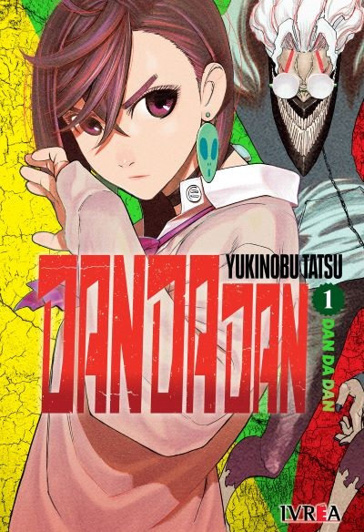

Mejores mangas de la temporada
gokurakugai

Tao y Alma son dos jóvenes que manejan una particular agencia que se encarga de “solucionar problemas” en la ciudad de Gokurakugai. La pareja acepta trabajos de toda índole, desde la búsqueda de personas desaparecidas hasta ayudar a empresarios que son extorsionados a raíz de sus peculiares prácticas sexuales. Pero, en secreto, los chicos forman parte de una organización que se dedica a luchar contra los maga, monstruos nacidos de cuerpos sin vida de personas y animales
nue's exorcist

Nue's Exorcist es un manga de acción sobrenatural, comedia y ecchi escrito e ilustrado por Kōta Kawae, que comenzó su publicación en la Weekly Shōnen Jump en mayo de 2023. La historia sigue a Gakurô Yajima, un joven capaz de ver espíritus, que hace un contrato con Nue, un poderoso espíritu con forma de mujer que vive en su escuela. Gakurô debe colaborar con ella para derrotar a otros espíritus y a otros exorcistas, quienes desconfían de Nue. La serie fue seleccionada en el puesto 7 en los premios Manga
kindergartenwars

El jardín de infantes Noir es conocido como “el más seguro del mundo”. Allí concurren los hijos de importantes políticos, celebridades, gente de negocios y otras personas importantes. La institución cuenta con un insólito sistema para evitar que sus alumnos puedan ser secuestrados o asesinados: contratar criminales condenados para que trabajen como maestros, ofreciéndoles una reducción de pena a cambio de sus servicios. En medio de este particular contexto nos presentan a Rita
junketbank

Junket Bank es un manga japonés de drama, comedia psicológica y thriller, escrito e ilustrado por Ikkō Tanaka.Publicado en la revista seinen Weekly Young Jump de Shueisha desde julio de 2020. Mitarai, un empleado bancario hastiado de su rutina diaria, es trasladado a una misteriosa "Unidad de Tasación". Allí, su nuevo jefe, Usami, lo guía a un pasadizo secreto dentro del banco, revelando un mundo clandestino de apuestas donde se desarrollan intensos juegos. El manga está publicado en la revista Weekly Young.
Mejores Animes de la temporada
kaiju n° 8
Japón sufre de manera constante el ataque de monstruos de diversas formas y tamaños llamados KAIJU Kafka Hibino es un hombre de 32 años que desde niño soñaba, junto con su amiga de la infancia, con formar parte del Cuerpo de Defensa, pero viendo que esta posibilida es algo imposible para él, se unió a los Monster Sweepers y trabaja como limpiador. Su vida dará un vuelco cuando conozca a Reno Ichikawa, un nuevo compañero de trabajo que ingresa a los Sweepers para ganar experiencia con los Kaiju y luego poder ingresar al Cuerpo de Defensa
one piece

El anime One Piece es una popular serie de televisión de animación japonesa producida por Toei Animation y basada en el manga de Eiichiro Oda. Estrenada en octubre de 1999, narra la historia de Monkey D. Luffy y su tripulación, los Piratas del Sombrero de Paja, en su búsqueda del legendario tesoro One Piece para convertirse en el Rey de los Piratas. La serie cuenta con más de 1.100 episodios además de varias películas, especiales de TV y OVAs, y se ha exportado a numerosos países.La franquicia incluye 15 películas, siendo One Piece Film Red la más taquillera.
dan da dan
DAN DA DAN es una popular serie de anime de acción sobrenatural basada en el manga de Yukinobu Tatsu, producida por Science SARU y estrenada en 2024. La historia sigue a Momo Ayase, que cree en fantasmas, y a Ken Takakura ("Okarun"), que cree en extraterrestres; cuando ambos se ven obligados a aceptar que ambos fenómenos son reales, se ven envueltos en una aventura que les da poderes y los enfrenta a amenazas paranormales.La serie mezcla terror, acción, comedia y romance con elementos de ciencia ficción.
sakamoto days

Tarō Sakamoto era un legendario sicario, temido por todos, llegando a ganarse el estatus de leyenda en el bajo mundo. Sin embargo, un día encontró al amor de su vida, abandonó el mundo de la criminalidad, se casó, tuvo una hija y subió mucho de peso. Ahora, Sakamoto trabaja en una tienda de conveniencia llevada por su familia, viviendo una vida feliz. No obstante, el mundo de la criminalidad todavía lo persigue. Sakamoto, junto con Shin, su antiguo joven aprendiz el cual cuenta con telepatía y trabaja en la tienda.